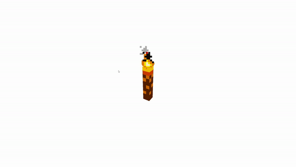
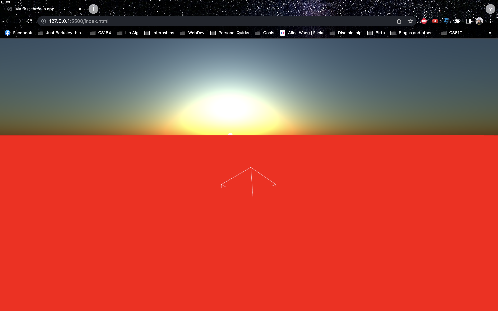
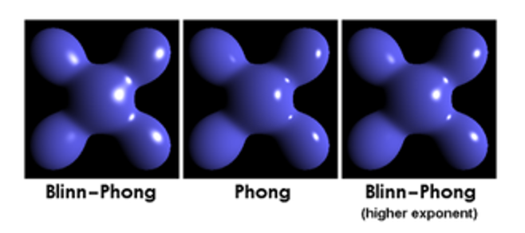

Abstract
For our final project we learned Three.js and implemented a water scene. We explored how to simulate smoke particles in a physically-realistic 3D setting, fluid dynamics, and WebGL shaders. Ultimately, we decided to create an open, 3D setting with camera controls that displayed a shaded 2D plane which mimics a 3D ocean scene. We used Blinn-Phong shading for reflectivity/refractivity and introduced a time variant to emulate wave movements and light scattering. We also included our smaller accomplishments such as a smoke-particle torch, blender-generated octopus, and three.js gui in the final scene to demonstrate our progress throughout the entire project.
Technical Approach
Given that all of us had no experience with Three.js and smoke and fluid simulations, the first few weeks were spent researching and implementing toy solutions. We read papers, played around with several simulations, and watched several tutorials on Three.js and smoke/fluid simulations to find the best way to translate physics into a simulation.
|

|

|
From the start, we wanted to simulate water or smoke in an interactive 3D space. We attempted to build off of existing simulations by adding a third dimension. However, we found our approach to be flawed since adding a z-axis alone could not accurately represent the physics of fluid or smoke correctly. Introducing another axis required knowledge of the underlying mathematical models, which we were all unfamiliar with and inexperienced in. Smoke was also much harder to represent correctly which is why we attempted to focus more on water.
Because of this, we decided to switch gears to an alternative method – treating water as a 2D plane. We can then rotate the plane horizontally and shade the plane. Instead of focusing on the physical properties of fluids, we decided to model how the water should look and shade the 2D plane to emulate a 3D ocean scene. We built our scene following a tutorial on building an ocean using the water object in three.js’s library. We then built our water object modeled off of Mr.roob’s Three. library.
|

|
Water has many interesting visual properties, but we focused mainly on reflectivity and refractivity. In order to emulate the reflective property of water, we used the Blinn-Phong reflectivity model from class. We referenced code used in existing Blinn-Phong shaders, one example which can be found here: https://en.wikipedia.org/wiki/Blinn–Phong_reflection_model.
We also introduce refractivity, which is nearly identical to reflectivity except for the angle and direction of the ray. These alone are enough to capture the reflectivity and refractivity properties of water, but applying these methods by themselves would reveal an unconvincing, shiny plane with little variations. Especially since we are projecting our texture map onto the 2D plane, you would essentially see our texture map, but shiny.
|

|
In order to truly simulate a “moving” ocean, we use a time variable captured from the three.js animator and apply an offset to the pixel’s position on the texture map. This creates an effect of stretching and squashing the texture map, all while maintaining the same relative size “pulled” over the 2D plane. As a contrived metaphor, imagine stretching a sheet cover over your mattress. As long as the edges are “tucked,” you can push and pull at the top of the mattress and see the sheet cover move around. In our scenario, the mattress is the 2D plane and the sheet cover is our texture map. This time-step hack gives the illusion that the ocean is moving back and forth, like waves would.
We spent a long time researching smoke simulations and aspects of fluid dynamics. Despite not being able to actually simulate smoke via the navier-stokes equations in 3D, we wanted to still render smoke while exploring particle systems via building minecraft torches. The flame and smoke are both particle systems. Each particle has a “lifetime” for how long they last before they are “deleted” as well as a frequency for how often new particles are spawned. By keeping track of the difference between the elapsedTime and a particle’s spawn time and comparing it with the particle_life, one can determine whether the particle should be kept or removed. For the central minecraft torch, the particle lifetime, emit rate, and rate at which particles fade away in transparency can be adjusted. For each flame particle, at each timestamp the y position of particles and particle size is increased by 0.001. For each smoke particle, at each timestep a random number is generated and added for both the x coordinate and z coordinate, while the y coordinate increases by 0.005 multiplied by some scalar value, used to determine the relative sizes of torches; however, at each timestep each smoke particle’s size and alpha (or transparency) value decrease as well which gives the effect of the smoke fading over time.
We also rendered an Octopus in Blender. We first had to spend time learning Blender and started with tutorials to learn the basics. We created multiple iterations of the octopus where we experimented with different shapes and shaders. In terms of shaders, we focused on first smoothing the figures and then using various colors to shade it. We decided to use a metallic finish to make the octopi pop in the water. Unfortunately, the shaders were not able to export to Three.JS, but we were able to import the actual octopi with smoothing.